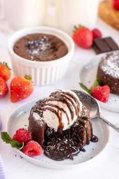
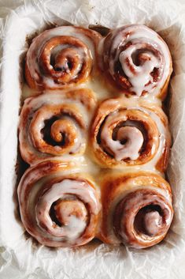
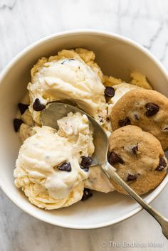

<h1>Dessert Menu</h1>
<button onclick="goBack()">Go Back</button>
  <script>
        function goBack() {
            window.history.back();
        }
    </script>

    <!-- Button to navigate to the next page -->
    <h2>Lava Cake</h2>
    
    <br>
    <button onclick="window.location.href='lavacake.html'">Get Recipe</button>

    <br>

    <h2>Cinnamon Rolls</h2>
    
    <br>
    <button onclick="window.location.href='cinnamonrolls.html'">Get Recipe</button>

    <br>

     <h2>Cookie and Ice cream</h2>
     
     <br>
    <button onclick="window.location.href='cookies-icecream.html'">Get Recipe</button>

    <br>

    
    


